THE HUBBLE SPACE TELESCOPE, THE SPITZER SPACE TELESCOPE, AND THE CHANDRA X-RAY OBSERVATORY HAVE PRODUCED A MATCHED TRIO OF IMAGES OF THE CENTRAL REGION OF OUR MILKY WAY GALAXY.
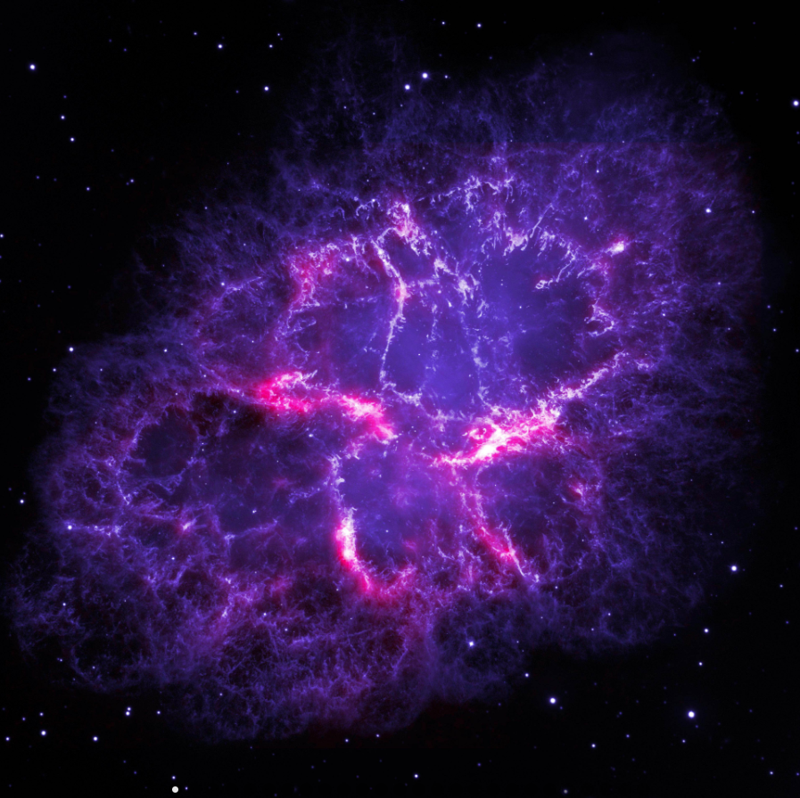
A COMPOSITE VIEW OF THE CRAB NEBULA, AN ICONIC SUPERNOVA REMNANT IN OUR MILKY WAY GALAXY, AS VIEWED BY THE HERSCHEL SPACE OBSERVATORY AND THE HUBBLE SPACE TELESCOPE.
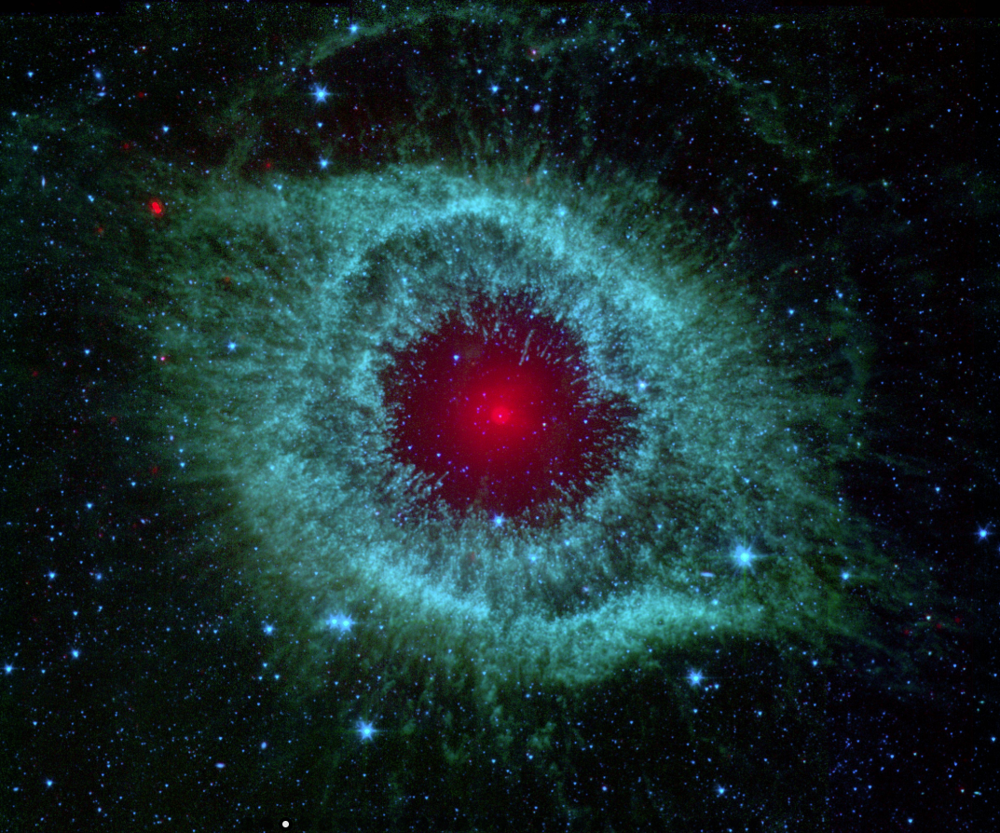
THIS INFRARED IMAGE FROM NASA SPITZER SPACE TELESCOPE SHOWS THE HELIX NEBULA, A COSMIC STARLET OFTEN PHOTOGRAPHED BY AMATEUR ASTRONOMERS FOR ITS VIVID COLORS AND EERIE RESEMBLANCE TO A GIANT EYE.

THE TWIN JET NEBUA, IS AN EXAMPLE OF A BIPOLAR PLANETARY NEBULA, FORMED WHEN THE CENTRAL OBJECT ISN'T A SINGLE STAR, BUT A BINARY SYSTEM.

THIS DAZZLING INFRARED IMAGE FROM NASA SPITZER SPACE TELESCOPE SHOWS HUNDREDS OF THOUSANDS OF STARS CROWDED INTO THE SWIRLING CORE OF OUR SPIRAL MILKY WAY GALAXY.
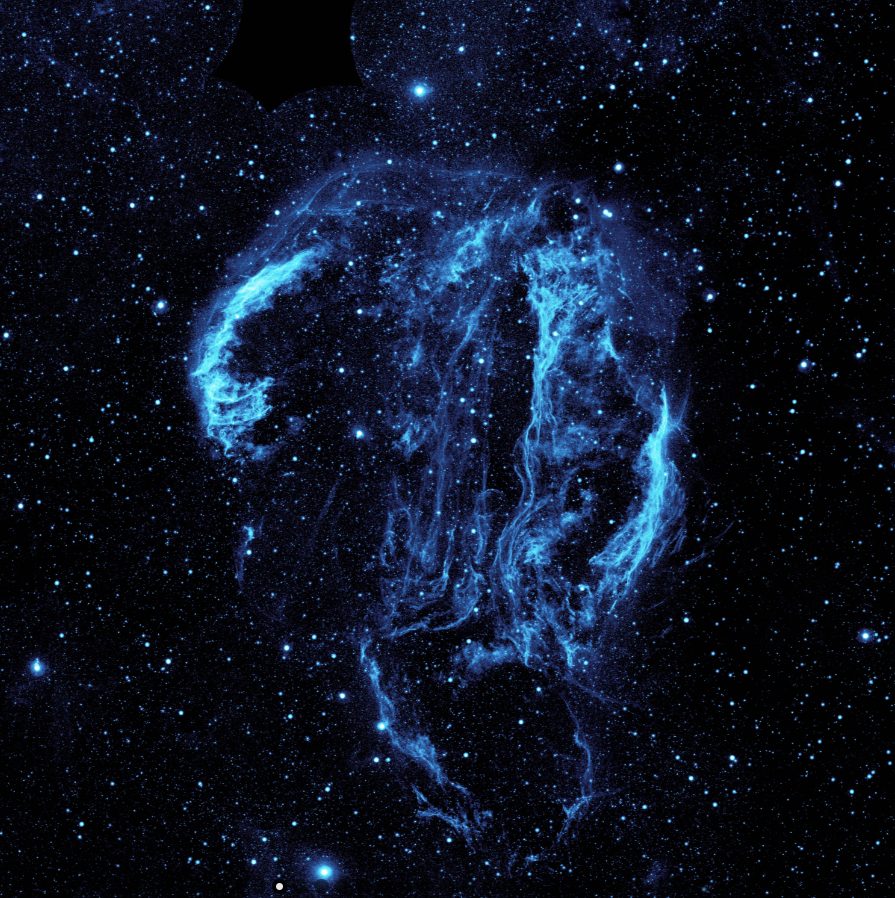
WISPY TENDRILS OF HOT DUST AND GAS GLOW BRIGHTLY IN THIS ULTRAVIOLET IMAGE OF THE CYGNUS LOOP NEBULA, TAKEN BY NASA GALAXY EVOLUTION EXPLORER.

What looks much like craggy mountains on a moonlit evening is actually the edge of a nearby, young, star-forming region NGC 3324 in the Carina Nebula.
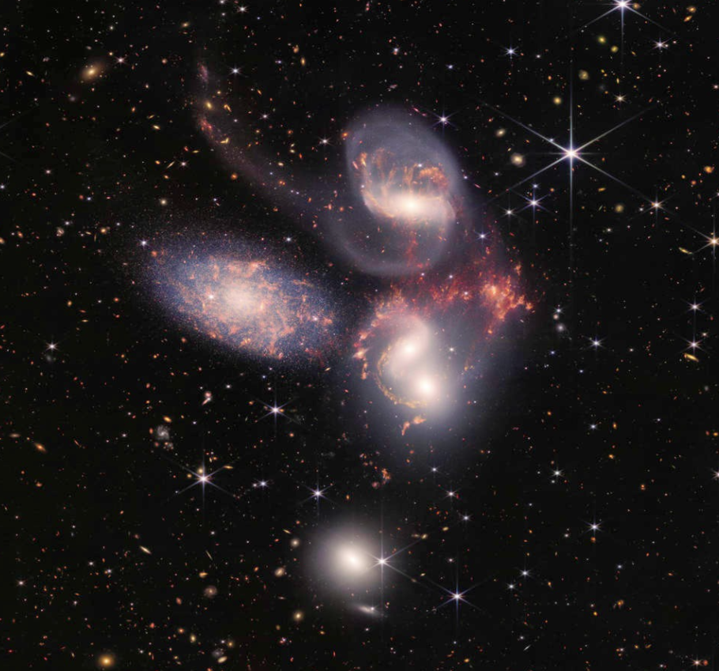
STEPHAN’S QUINTET, A VISUAL GROUPING OF FIVE GALAXIES, IS BEST KNOWN FOR BEING PROMINENTLY FEATURED IN THE HOLIDAY CLASSIC FILM, “IT’S A WONDERFUL LIFE.”

The Pillars of Creation are set off in a kaleidoscope of color in NASA’s James Webb Space Telescope’s near-infrared-light view. The pillars look like arches and spires rising out of a desert landscape, but are filled with semi-transparent gas and dust, and ever changing.
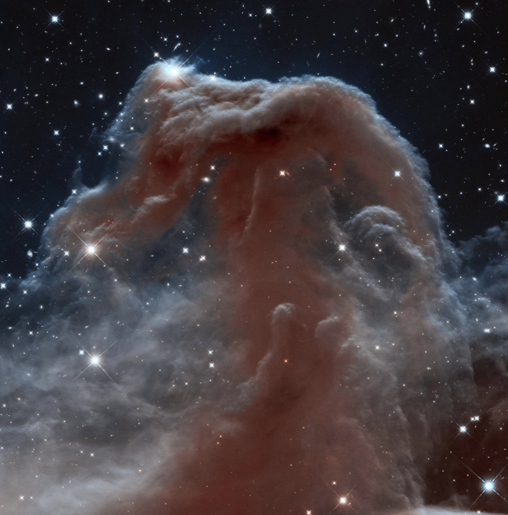
BACKLIT WISPS ALONG THE HORSEHEAD NEBULA UPPER RIDGE ARE BEING ILLUMINATED BY SIGMA ORIONIS, A YOUNG FIVE-STAR SYSTEM JUST OFF THE TOP OF THIS IMAGE.
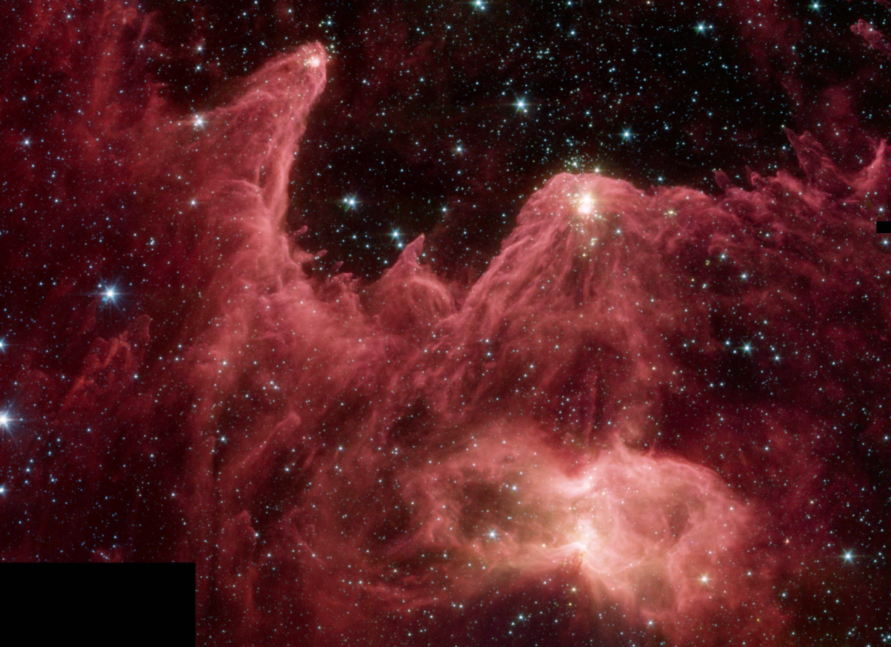
THIS MAJESTIC FALSE-COLOR IMAGE ("TOWERING INFERNOS") FROM NASA'S SPITZER SPACE TELESCOPE SHOWS THE "MOUNTAINS" WHERE STARS ARE BORN.
EXPEDITION 50 ASTRONAUTS CAPTURED THIS NIGHT IMAGE OF SPARKLING CITIES AND A SLIVER OF DAYLIGHT FRAMING THE NORTHERN HEMISPHERE.
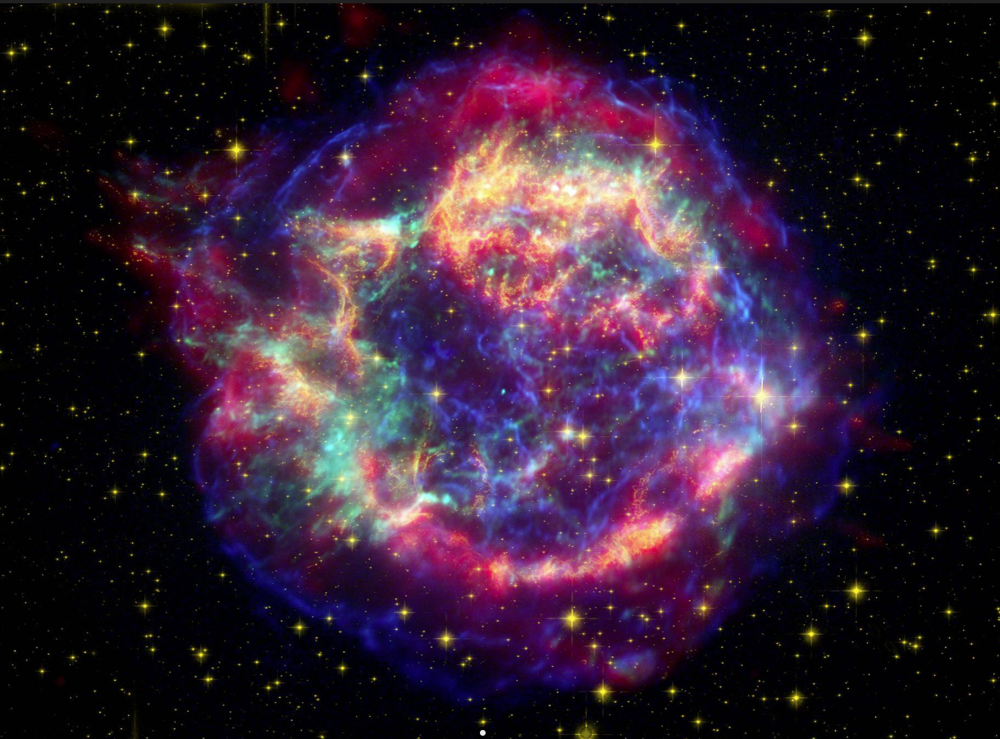
THIS FALSE-COLOR IMAGE FROM THREE OF NASA GREAT OBSERVATORIES PROVIDES ONE EXAMPLE OF A STAR THAT DIED IN A FIERY SUPERNOVA BLAST (CASSIOPEIA A).

THIS IMAGE FROM 1999 FROM NASA HUBBLE SPACE TELESCOPE IMAGE OF A CELESTIAL OBJECT CALLED THE ANT NEBULA MAY SHED NEW LIGHT ON THE FUTURE DEMISE OF OUR SUN.
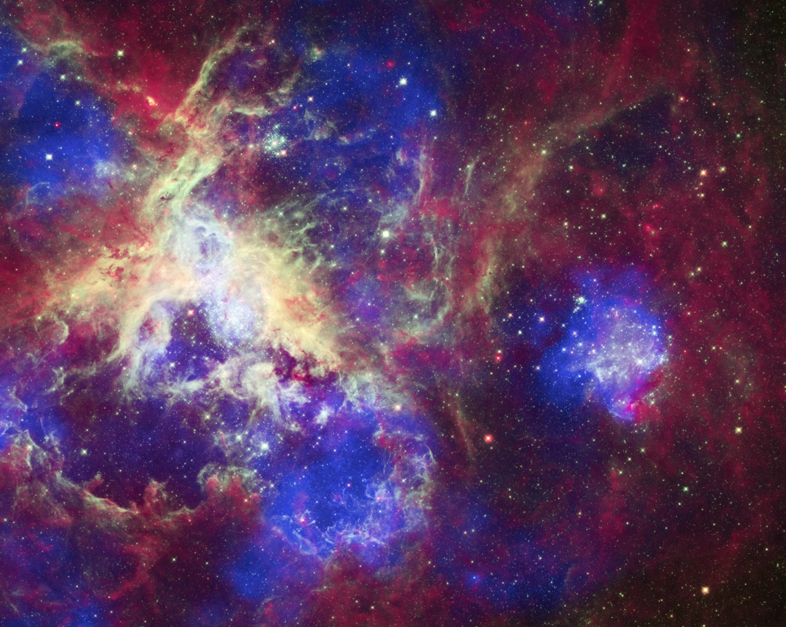
THIS COMPOSITE OF 30 DORADUS, THE TARANTULA NEBULA, CONTAINS DATA FROM CHANDRA BLUE, HUBBLE GREEN, AND SPITZER RED. IT IS LOCATED IN THE LARGE MAGELLANIC CLOUD.
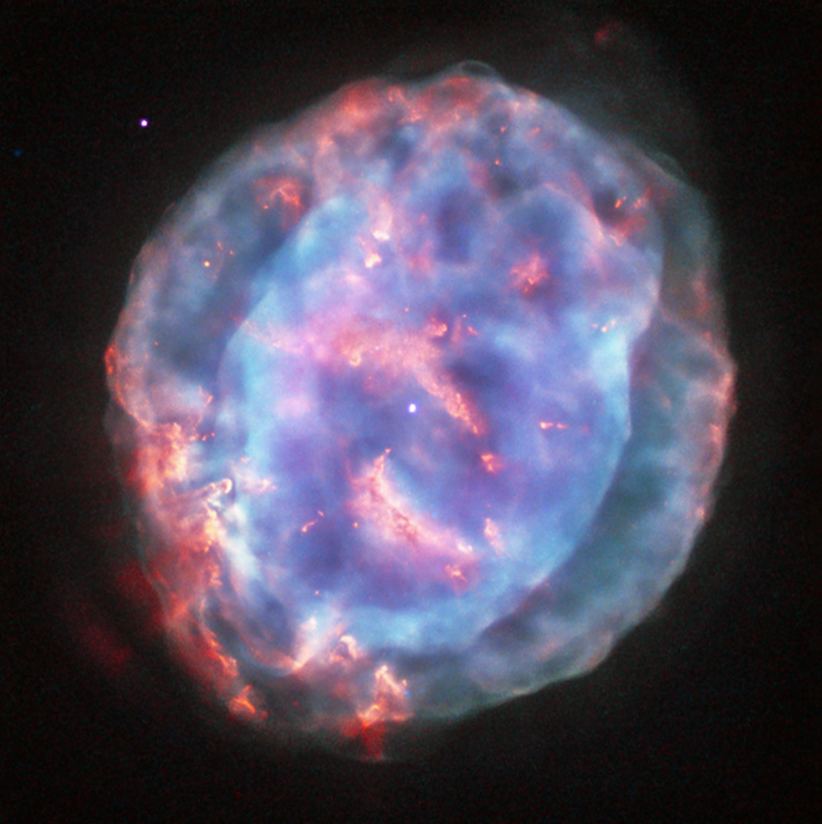
THIS COLOURFUL BUBBLE IS A PLANETARY NEBULA CALLED NGC 6818, ALSO KNOWN AS THE LITTLE GEM NEBULA. THE RICH GLOW OF THE CLOUD IS JUST OVER HALF A LIGHT-YEAR ACROSS.

THE PERFECTLY PICTURESQUE SPIRAL GALAXY KNOWN AS MESSIER 81, OR M81, LOOKS SHARP IN THIS COMPOSITE FROM NASA SPITZER, HUBBLE SPACE TELESCOPE AND GALAXY EVOLUTION EXPLORER.
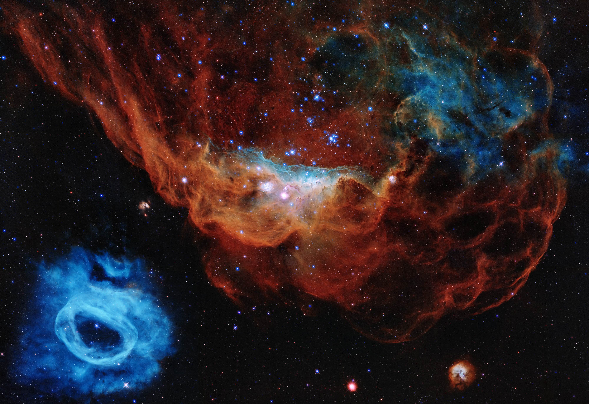
THIS IMAGE IS ONE OF THE MOST PHOTOGENIC EXAMPLES OF THE MANY TURBULENT STELLAR NURSERIES THE NASA/ESA HUBBLE SPACE TELESCOPE HAS OBSERVED DURING ITS 30-YEAR LIFETIME. Image by ESA/Hubble (esahubble.org). License: https://creativecommons.org/licenses/by/4.0/
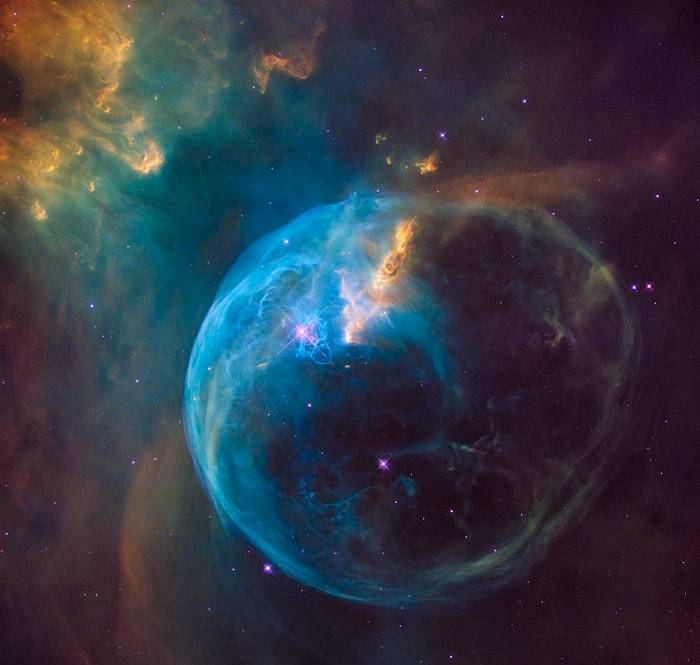
THE BUBBLE NEBULA, ALSO KNOWN AS NGC 7635, IS AN EMISSION NEBULA LOCATED 8 000 LIGHT-YEARS AWAY. THIS STUNNING NEW IMAGE WAS OBSERVED BY THE NASA/ESA HUBBLE SPACE TELESCOPE TO CELEBRATE ITS 26TH YEAR IN SPACE. Image by ESA/Hubble (esahubble.org). License: https://creativecommons.org/licenses/by/4.0/
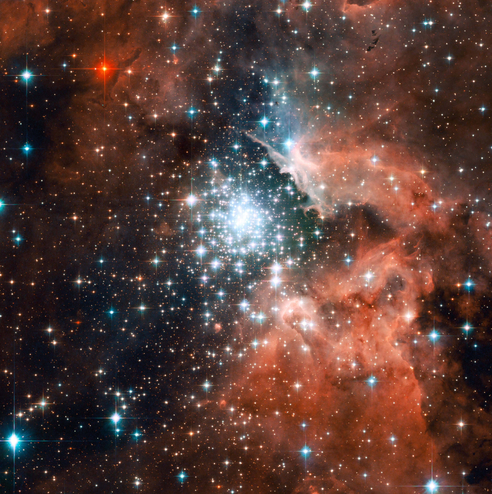
THE STAR-FORMING REGION NGC 3603 CONTAINS ONE OF THE MOST IMPRESSIVE MASSIVE YOUNG STAR CLUSTERS IN THE MILKY WAY. Image by ESA/Hubble (esahubble.org). License: https://creativecommons.org/licenses/by/4.0/
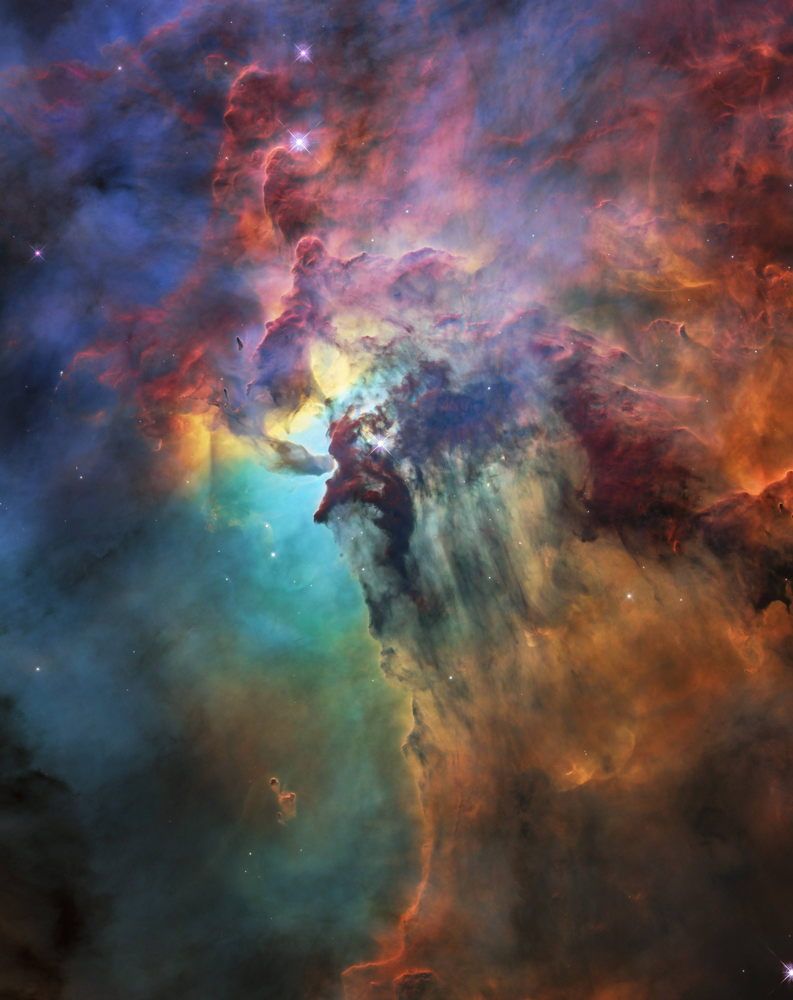
TO CELEBRATE ITS 28TH ANNIVERSARY IN SPACE THE NASA/ESA HUBBLE SPACE TELESCOPE TOOK THIS AMAZING AND COLOURFUL IMAGE OF THE LAGOON NEBULA. Image by ESA/Hubble (esahubble.org). License: https://creativecommons.org/licenses/by/4.0/
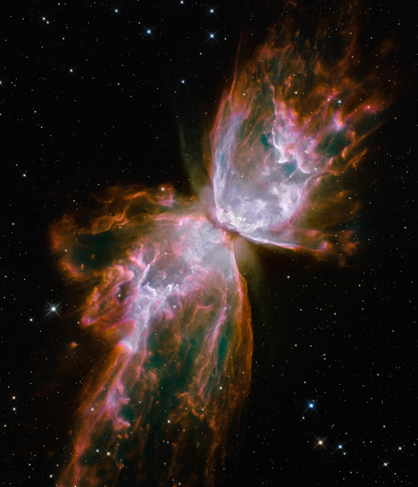
WHAT RESEMBLE DAINTY BUTTERFLY WINGS ARE ACTUALLY ROILING CAULDRONS OF GAS HEATED TO NEARLY 20 000 DEGREES CELSIUS! IMAGE BY ESA/HUBBLE. Image by ESA/Hubble (esahubble.org). License: https://creativecommons.org/licenses/by/4.0/
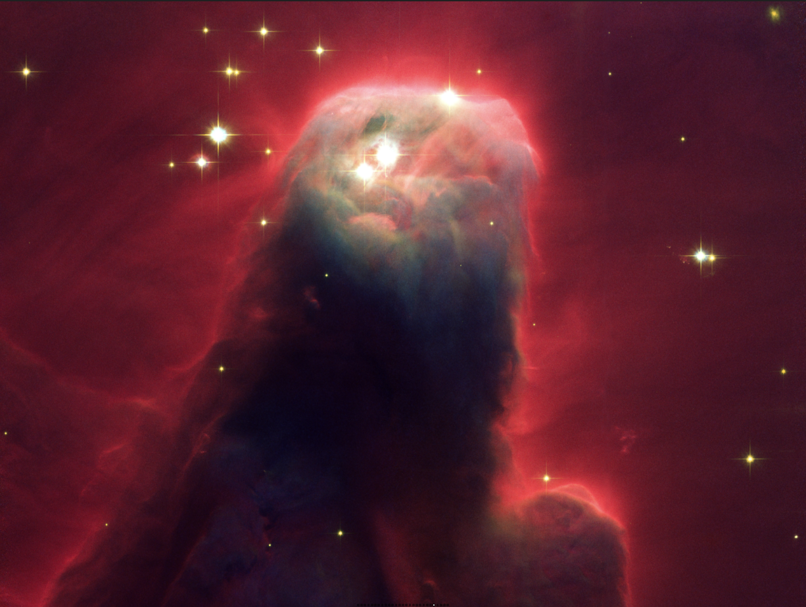
THIS PICTURE, TAKEN BY THE NEWLY INSTALLED ADVANCED CAMERA FOR SURVEYS (ACS) ABOARD THE NASA/ESA HUBBLE SPACE TELESCOPE, SHOWS THE UPPER 2.5 LIGHT-YEARS OF THE CONE, A HEIGHT THAT EQUALS 23 MILLION ROUNDTRIPS TO THE MOON. Image by ESA/Hubble (esahubble.org). License: https://creativecommons.org/licenses/by/4.0/

THIS STUNNING IMAGE OF NGC 1275 WAS TAKEN USING THE NASA/ESA HUBBLE SPACE TELESCOPE'S ADVANCED CAMERA FOR SURVEYS IN JULY AND AUGUST 2006. IT PROVIDES AMAZING DETAIL AND RESOLUTION OF THE FRAGILE FILAMENTARY STRUCTURES, WHICH SHOW UP AS A REDDISH LACY STRUCTURE SURROUNDING THE CENTRAL BRIGHT GALAXY NGC 1275. Image by ESA/Hubble (esahubble.org). License: https://creativecommons.org/licenses/by/4.0/
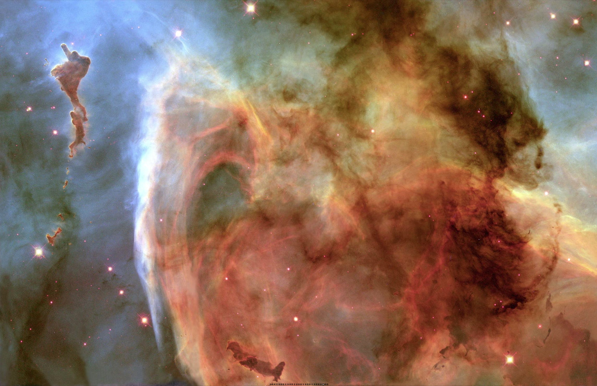
PREVIOUSLY UNSEEN DETAILS OF A MYSTERIOUS, COMPLEX STRUCTURE WITHIN THE CARINA NEBULA (NGC 3372) ARE REVEALED BY THIS IMAGE OF THE 'KEYHOLE NEBULA', OBTAINED VIA HUBBLE. Image by ESA/Hubble (esahubble.org). License: https://creativecommons.org/licenses/by/4.0/
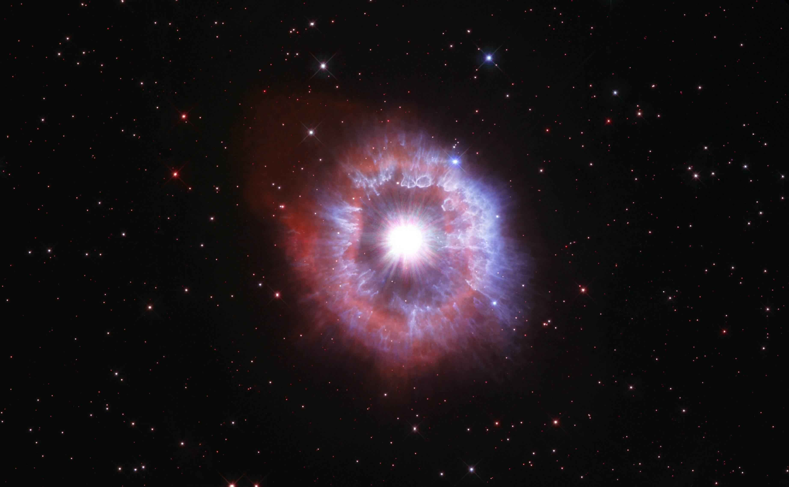
IN CELEBRATION OF THE 31ST ANNIVERSARY OF THE LAUNCH OF THE NASA/ESA HUBBLE SPACE TELESCOPE, ASTRONOMERS AIMED THE CELEBRATED OBSERVATORY AT ONE OF THE BRIGHTEST STARS SEEN IN OUR GALAXY TO CAPTURE ITS BEAUTY. Image by ESA/Hubble (esahubble.org). License: https://creativecommons.org/licenses/by/4.0/
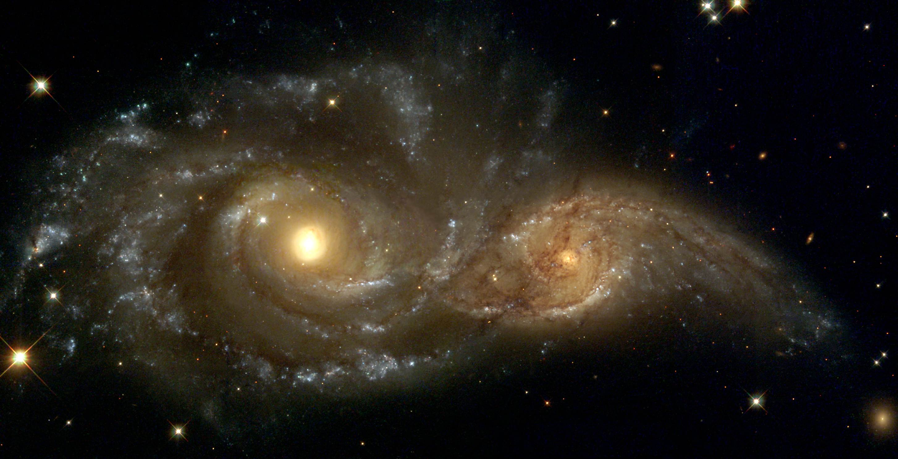